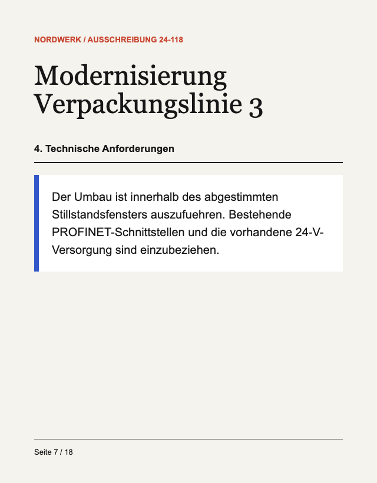
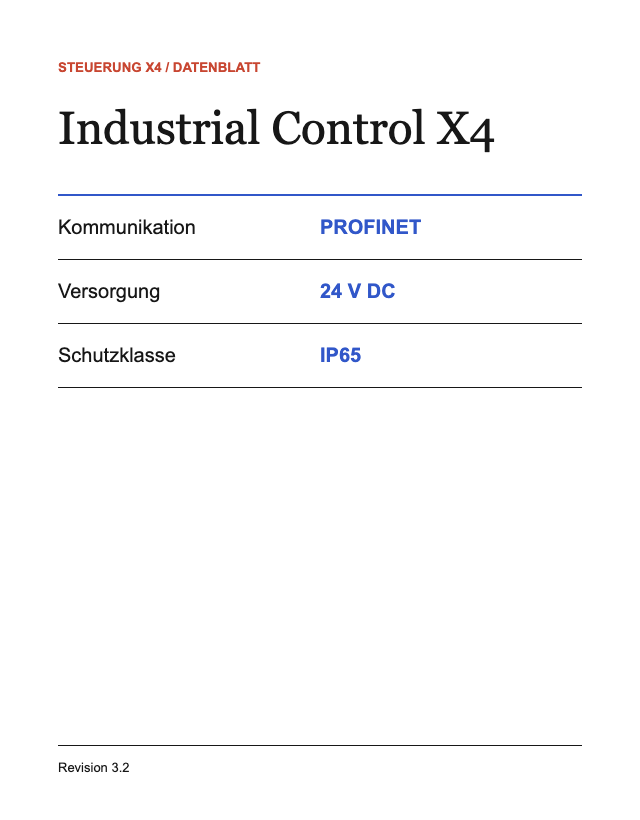
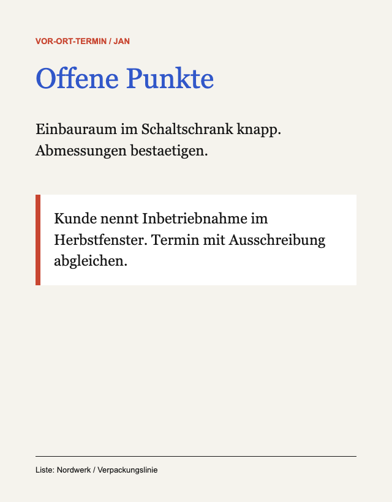
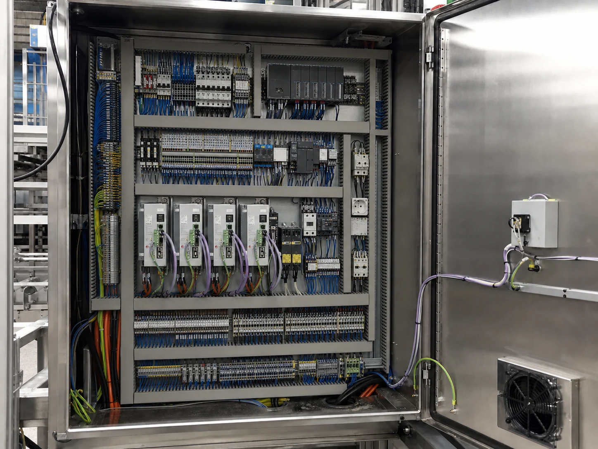

SalesPrepare enquiries systematically for proposals
Intelligence for everyday work
Intelligent workflows. Clear paths.
CloudLotse creates intelligent workflows that provide knowledge, take over tasks and give teams more time for the work that matters.
Review a workflow →The Clear RouteMany possible paths. One workflow that keeps work moving.
What becomes possible
Recogniseinformation.Connect knowledge.Prepare work.
Many tasks are difficult not because knowledge is missing, but because information has to be found, transferred and put into context again and again.
CloudLotse turns that friction into clear workflows. Your team retains control and makes the decisions while recurring preparation is handled reliably.
01
Hand over recurring preparation
Take over tasks
The workflow recognises, organises and prepares. Your team reviews, decides and moves the work forward.
Example / Nordwerk
A complex enquiry becomes a review-ready foundation.
Starting pointA 17-page enquiry, several project sources and a proposal that needs to be prepared today.
The intelligent workflow
Recognise. Connect. Prepare.
The proposal team keeps the professional decision. It no longer has to handle the search and transfer work itself.
1Capture requirements from the enquiryrecognised
2Find relevant project informationconnected
3Assemble the proposal foundationprepared
Illustrative time required
before
130 m
with flow
25 m
02
Answers from the right context
Make knowledge available
Links, PDFs, photos and notes become useful exactly where the team needs a reliable answer.
Project knowledge / Nordwerk
Collected knowledge becomes an evidence-based answer.
One question for exactly this project context.
The team saves everything relevant in a shared project list. The answer is built exclusively from those sources.
Question from the teamWhich requirements must we consider when upgrading the control system?
Illustrative time required
search
45 m
ask
8 m



Answer from the Nordwerk project listThe existing control system supports PROFINET and 24 V DC. The limited cabinet space must be checked before installation.Sources: Data sheet X4 · Site note Jan · Tender 24-118
03
Handoffs without duplicate work
Connect workflows
Information moves completely between the systems involved. Status, documents and the next task arrive together.
Example / Customer service
Four handoffs become one continuous workflow.
01 / InputCustomer enquiry
02 / ContextCustomer and project knowledge
03 / ProcessingBusiness system
04 / NextNext task
OutcomeThe handoff contains everything the next step needs. Your team controls the process, not the data transfer.
04
Shared context for customers and projects
Organise collaboration
What is collected on the road stays with the right customer or project and becomes available to the whole team.
Example / Project team
Knowledge stays with the project. Not in one inbox.
Nordwerk / Packaging line
12 sources · 4 team members · updated today
Photo from the site visitTender 24-118
Open items from the visit
Further use cases
Concrete problems become solutions that work.
ServiceUse project knowledge directly on site
Project workKeep information in the right context
Control is part of the solution.
01
The operating model fits the task
EU-based, self-hosted or connected to external services, depending on the data, risk and level of control required.
02
External processing remains visible
No blanket privacy promises, but a conscious and transparent decision for each workflow.
03
Implementation, not a concept document
CloudLotse designs, connects and supports the workflow through to productive use.
A useful first step
Which workflow costs your team unnecessary time every day?
We look at the specific bottleneck, review the data and systems involved and show what a working workflow could look like.
Review a workflow →